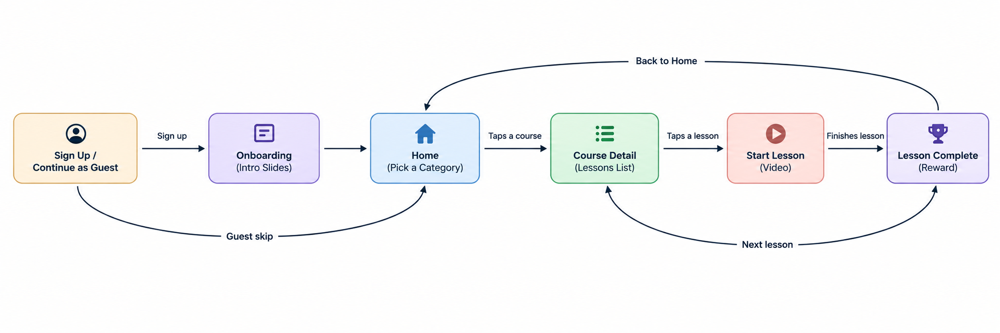
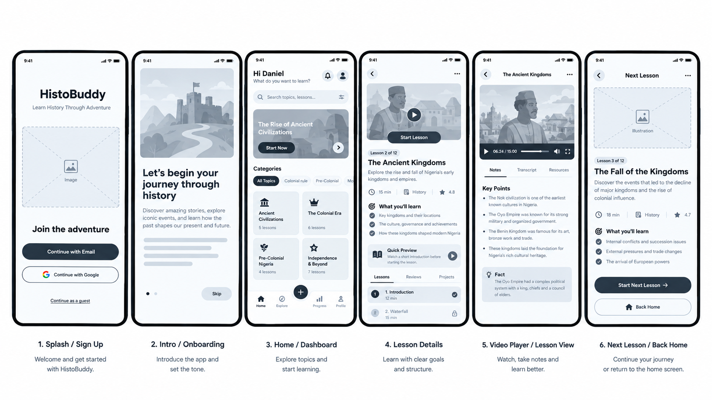

The Problem
Nigerian history often feels distant and boring when taught in class. HistoBuddy turns it into an adventure, so learning feels like an experience, not a lesson.
Who It's For
Children learning Nigerian history, who need history to feel fun and alive rather than like a textbook. Because the users are children, the design keeps things simple, playful, and easy to tap through without adult help.
User Flow
Here's how a child moves through the app, from sign-up to finishing a lesson.

Wireframe to Final Design
Before adding colors and images, I laid out the structure of all 6 screens in wireframes, then built on top of that same structure for the final design.
Wireframes

Final Design

The gray placeholder boxes became warm, clay-textured illustrations featuring a recurring character, giving the app a crafted, adventure-like feel instead of a generic app look. "Continue with Email" and other key actions became a bold, consistent purple, so users always know the next step. Even with this full visual redesign, the screen order, layout, and information structure stayed exactly as planned in the wireframes, proving the original structure held up through a complete style change.
Design Choices
- A consistent character guide instead of generic illustrations. A small recurring character appears across all 6 screens, acting like a "buddy" to learn alongside, which fits the HistoBuddy name and makes history feel like a guided adventure for a child.
- Warm, sandy, clay-like tones instead of flat cartoon colors. The textured, earthy illustration style feels tied to history and discovery, making learning feel like exploring something real and exciting, not like sitting in a classroom.
- One consistent accent color (deep purple/indigo). Every primary action uses the same color, so a child always knows what to tap next without guessing.
- "Continue as a Guest" still kept. Children often don't have their own email, so this option removes that barrier completely.
- Category pills and card layout kept from the original wireframe, proving the original structure was solid enough to carry through a full visual redesign.
- Progress and rewards made visible. XP, streaks, and a progress bar turn finishing a lesson into a small win, which helps keep a child motivated to come back.